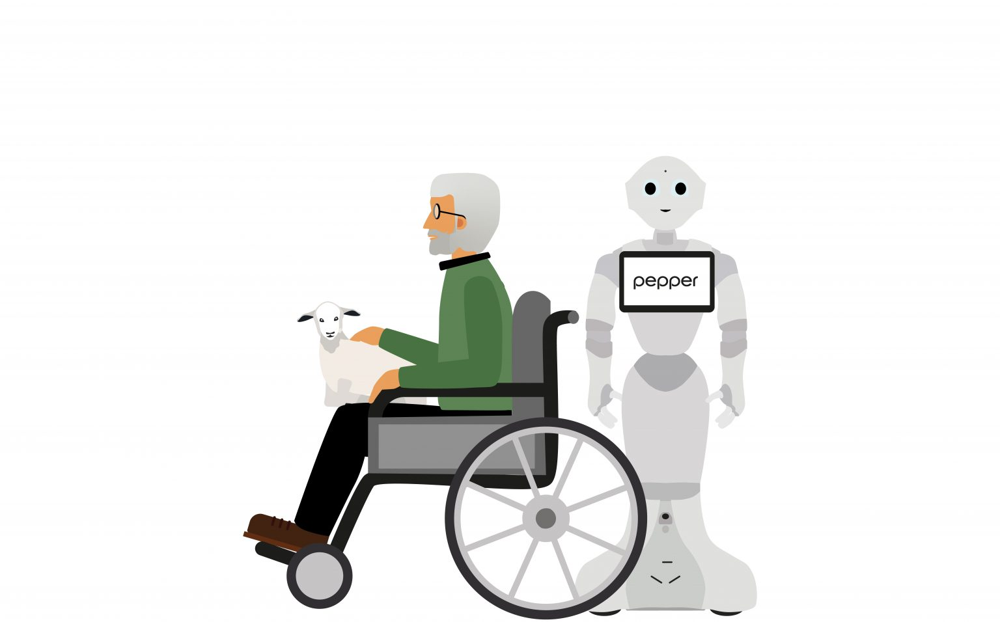

Новостная лента

Isn’t that a bit creepy? Robots with ‘human’ brains
How will robots change the world? A frequently asked and as yet unanswered question. After all, we do not have a crystal ball. What we do know is that digitalization and automation have changed the world enormously in recent decades. At Eindhoven University of Technology (TU/e) in the Netherlands, the potential of smart machines in industry and daily life is being researched each and every day. Scientists immerse themselves in technology and student teams get to work on concrete solutions to social problems. This series will tell you about the latest robots, their background, and their future. Today, the seventh episode today: social robots. In the Social Robotics Lab at TU/e, researchers and students are taking up the challenge: They are researching the ways to teach social skills to robots. Will robots still be distinguishable from humans in the future? We are using robots more and more often in everyday life, for instance in the workplace or for domestic tasks. Practical and repetitive tasks can be performed very well by robots, even better than humans can. But how close do you actually get to someone when you want to ask something? And during a conversation, how long do you look at someone before you look away? These are all social skills that we don’t even think about, these things just happen automatically. For a robot, these things are difficult to determine, especially because they are not set facts or tasks. Step for step Emilia Barakova and Raymond Cuijpers, the founders of the Social Robotics Lab, are working on these issues each and every day. Barakova is a senior lecturer on socially intelligent systems at the Faculty of Industrial Design and Cuijpers researches cognitive robots and human-robot interactions. “We teach the robots specific skills step by step,” Barakova explains. “This always involves a great deal of research.” So it seems that in the coming years, we will not have to worry about perfect social robots that are going to lead their own lives. Psychology “It is a world in which human psychology and robotics converge,” Cuijpers notes. Social robotics is a relatively new field of research. Where many researchers now focus on the practical and technological challenges posed by robots, Cuijpers and Barakova are looking further ahead. Because the more robots go and do things, the more important their social skills will become. For example, a lot of research is being done into robots in elderly care so that people can stay in their own homes for longer. “What struck us is that people feel less social pressure with a robot. When a person needs assistance in going to the toilet, the elderly often feel a bit uncomfortable. They don’t feel that way with a robot,” Cuijpers explains. “They need an impartial robot, a buddy, a bit like a pet. In that case, particular skills for putting someone at ease are very important.” Body language “The robot needs to be able to grasp both verbal and non-verbal communication,” says Barakova. Cuijpers continues: “If the robot asks how things are going, a person can say that they are doing fine. But that word in itself usually doesn’t say that much. You look at facial expressions and listen to the tone to see if someone really means it.” According to the researcher, the robot understands more of the context in which things are being said by also looking at non-verbal communication. According to him, this is important both for humanoid robots, (robots that resemble people), and for machines such as service robots. “Most robots work with people and therefore need to understand people. It is easier for robots that look like humans to communicate non-verbally, for example with facial expressions.” Over the past few years, Barakova has been researching the use of robots in therapy for children living with autism. Recognizing non-verbal communication is very difficult for these children. The robot has learned a number of non-verbal forms of communication which it can then convey to the child. “For instance, the robot and a child can play the memory game together. The child flips over a card and the robot looks at the matching card that is still turned upside down. This teaches the child to follow the robot’s viewing direction in order to find the card,” Barakova continues. “Following the viewing direction is a social skill that people often use in everyday life. This kind of robot is also capable of supporting people with cognitive or visual impairments. “The robot is then a sort of coach that helps you to express yourself in a certain situation.”
Другая новость более интересная новость
информация
Пост дня
...
Новость
...